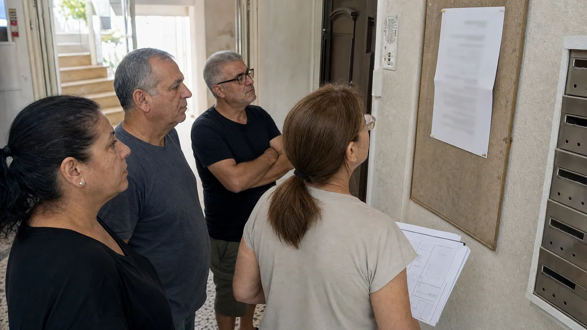

זהו הסיוט של כל נציגות דיירים: אחרי שנים של ציפייה, פגישות ותכנונים, היזם חוזר לשולחן המשא ומתן עם בשורה מרה – "הפרויקט לא כלכלי, אני חייב להפחית במטרים של הדירה החדשה".
תופעת "נסיגת היזם" הפכה לנפוצה במיוחד בשנים האחרונות בשל עליית הריבית ומחירי התשומות. אז מה עושים? האם חייבים להסכים לכל גזירה, או שיש דרך להילחם על הבית? הנה המדריך המלא להתמודדות עם הפחתת תמורות.
1. אל תיכנסו לפאניקה – בקשו "דוח אפס" מעודכן
כשיזם טוען ש"הפרויקט לא כלכלי", הוא מתבסס על מסמך שנקרא דוח אפס (תחשיב כלכלי של הכנסות מול הוצאות).
הצעד שלכם: אל תסתפקו במילים. דרשו מהיזם להציג את הדוח המעודכן ליועצים הכלכליים מטעמכם.
מה לבדוק? האם הוא באמת הפסיד רווח, או שהוא פשוט מנסה להגדיל את שורת הרווח שלו על חשבונכם?
2. האם מדובר בשינוי מדיניות של הרשות המקומית?
לפעמים היזם "צודק" ולא מרצון. עיריות רבות בישראל שינו בשנה האחרונה את המדיניות שלהן (למשל, הגבלת תמורות ל-12 מ"ר בלבד). אם העירייה היא זו שחוסמת את התמורות המובטחות, עמידה עיקשת שלכם על המטרים המקוריים עלולה פשוט לתקוע את הפרויקט לשנים. במקרה כזה, הפתרון הוא יצירתיות.
3. פתרונות יצירתיים: "לא רק מטרים"
אם אין ברירה וחייבים לצמצם בשטח הדירה כדי שהפרויקט יצא לדרך, אפשר לדרוש פיצוי באפיקים אחרים שישמרו על ערך הנכס:
שדרוג מפרט טכני: מטבח יוקרתי יותר, ריצוף יקר או מערכות מיזוג מתקדמות.
מחסן או חניה נוספת: שווי של חניה בערים צפופות יכול להיות גבוה משווי של 2–3 מ"ר בדירה.
הפחתת דמי הניהול: התחייבות של היזם לסבסד את חברת הניהול של הבניין ליותר שנים.
4. מנגנון "Shared Pain & Gain" (רווח והפסד משותפים)
אחד הפתרונות ההוגנים ביותר הוא קביעת מנגנון עדכון. אם היום היזם טוען לקשיים, ניתן לקבוע בהסכם שאם מחירי הדירות באזור יעלו ב-X אחוזים עד מועד השיווק, התמורות שלכם יוחזרו לקדמותן או שתקבלו פיצוי כספי.
5. האם אפשר להחליף יזם?
זהו "נשק יום הדין". אם היזם חתום על הסכם מחייב והוא מבקש לשנות אותו באופן חד-צדדי, זו עשויה להיות הפרת חוזה.
הסיכון: החלפת יזם מחזירה אתכם לנקודת האפס ומבזבזת שנים.
הסיכוי: מציאת יזם חזק יותר שמוכן להסתפק ברווח קטן יותר כדי להיכנס למתחם אסטרטגי.
טיפ הזהב: כוחה של נציגות מאוחדת
יזמים מזהים בקלות נציגויות "חלשות" או מפולגות ומפעילים עליהן לחץ. ככל שתהיו מאוחדים ותפעילו אנשי מקצוע מטעמכם (עורך דין, שמאי ושמאי פינוי-בינוי לפי תקן 21), כך היזם יחשוב פעמיים לפני שינסה "לקצץ" לכם בזכויות.
זכרו: המטרה שלכם היא שהפרויקט יצא לדרך, אבל לא בכל מחיר.
היזם שלכם התחיל לדבר על "צמצום שטחים"? אל תשארו לבד במערכה. צרו איתנו קשר לייעוץ ראשוני ובדיקת הזכויות המגיעות לכם.
בשורה התחתונה
כשיזם חוזר חצי שנה אחרי החתימה ומבקש "להפחית קצת בתמורות" — זה לא סוף הדרך, אבל זה גם לא רגע לרוץ לחתום על תיקון. הצעד הראשון הוא לדרוש דוח אפס מעודכן של שמאי ניטרלי, ולבדוק האם השינוי הכלכלי אמיתי או שמדובר בלחץ מסחרי. רק אז מחליטים אם לתת הנחה — ואם כן, מה לדרוש בתמורה.
שאלות נפוצות
היזם אומר שהפרויקט לא כלכלי — איך אני יודע אם זה נכון? דרשו דוח אפס מעודכן של שמאי ניטרלי (לא של היזם). אם הוא מסרב לממן את זה — זה דגל אדום בפני עצמו. דוח אמיתי יראה את עלויות הבנייה הנוכחיות, הריביות, ותחזית המכירות — ויאפשר לכם להבין אם מדובר במשבר כלכלי אמיתי או בלחץ מסחרי.
אם הפחיתו לי 5 מ"ר, כמה כסף זה בפועל? בגוש דן ממוצע — דירה חדשה שווה 30-45 אלף ש"ח למ"ר. 5 מ"ר זה בין 150 ל-225 אלף ש"ח לדירה. זה מקדם מחיר שהיזם מנסה להעביר אליכם, ולכן לא נכון לוותר עליו בלי פיצוי מקביל — שדרוג מפרט, תוספת חניה, או אפילו תשלום במזומן.
האם מותר להחליף יזם באמצע הדרך? בפינוי-בינוי יש מנגנונים להחלפת יזם בנסיבות מסוימות — למשל איחור משמעותי בעמידה באבני דרך, או חדלות פירעון. זה מהלך מורכב שמחייב עורך דין מנוסה, אבל עצם קיומו של האפשרות הזו הוא מנוף מו"מ חשוב.
מה עם תוספות לא כספיות שהיזם הבטיח בעל פה? בעל פה זה לא קיים. כל הבטחה — מפרט, מרפסת שמש, חניה נוספת, מחסן — חייבת להיות בנספח התמורות החתום. אם היזם מבקש להפחית משהו עכשיו, זה הזמן לבדוק מה בכלל נרשם לכם בהסכם מול מה שהובטח בפרזנטציה.
דיסקליימר
המידע במאמר הוא כללי ואינו מהווה ייעוץ משפטי/שמאות/מס. בכל מקרה מומלץ להיוועץ באנשי מקצוע לפי נסיבות הפרויקט.
היזם שלכם מבקש להפחית תמורות? אל תחתמו לפני שבדקנו
שלחו לנו את נספח התמורות המקורי + מה שהיזם מבקש לשנות, ונחזור תוך 48 שעות עם תמונת מצב: האם הבקשה מוצדקת, כמה זה באמת שווה בכסף, ומה תוכלו לדרוש בתמורה.
רוצים ייעוץ אישי בנושא?
אני עוזר לבעלי דירות ויזמים לנווט בפרויקטי התחדשות עירונית, מהשלב הראשון של בדיקת ההיתכנות ועד קבלת המפתח.